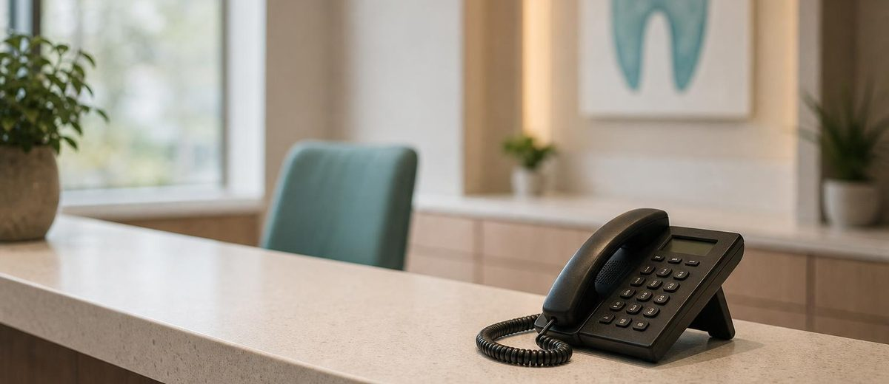
Las llamadas perdidas en recepción también son marketing dental
Una clínica dental puede perder pacientes antes de conocerlos. La recepción convierte o enfría cada oportunidad que entra.
Leer artículo →Por qué el marketing dental parece caro cuando no tienes sistema
El marketing dental no suele fallar solo por la campaña. Falla cuando la clínica no mide llamadas, citas, presupuestos y seguimiento.
Leer artículo →
Clínica dental independiente vs cadenas: lo que cambia antes de 2030
8 de cada 10 clínicas son independientes. Pero antes de 2030, las cadenas podrían llevarse el 60% de la facturación del sector.
Leer artículo →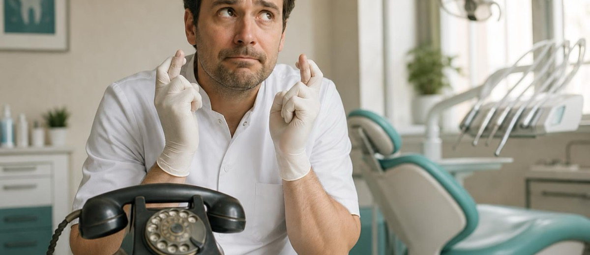
El boca a boca no tiene agenda: cómo convertir recomendaciones en crecimiento
El boca a boca sigue siendo oro para una clínica dental, pero no basta con esperarlo: hay que cuidarlo, medirlo y activarlo.
Leer artículo →Digitalizar tu clínica dental no es comprar pantallas: es dejar de gobernar a ojo
El 83% de las clínicas dentales sigue gestionando a ojo. Aquí tienes qué medir para pasar del 15% al 30% de rentabilidad.
Leer artículo →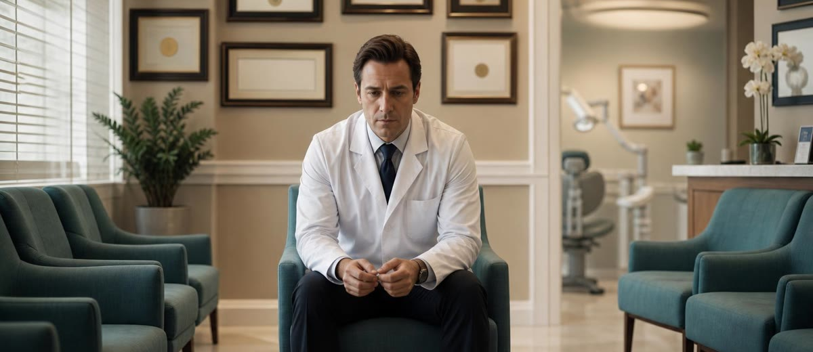
Hacer bien la odontología no basta: el paciente tiene que percibirlo
Una clínica dental puede trabajar muy bien y aun así no llenar la agenda si el paciente no percibe valor y confianza antes del sillón.
Leer artículo →Por qué el equipo de recepción puede valer más que el mejor equipamiento dental
La fidelización no empieza en el sillón: empieza en cómo reciben, llaman, recuerdan y cuidan a tus pacientes.
Leer artículo →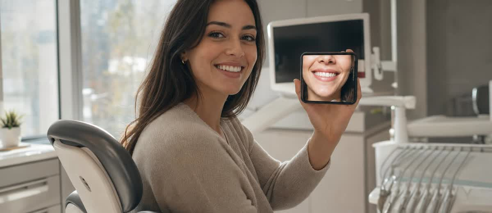
El paciente de estética dental no compra tratamientos: compra confianza
El paciente que llega por estética compara, duda y elige con calma. Si tu clínica le habla con prisa, lo pierde antes del presupuesto.
Leer artículo →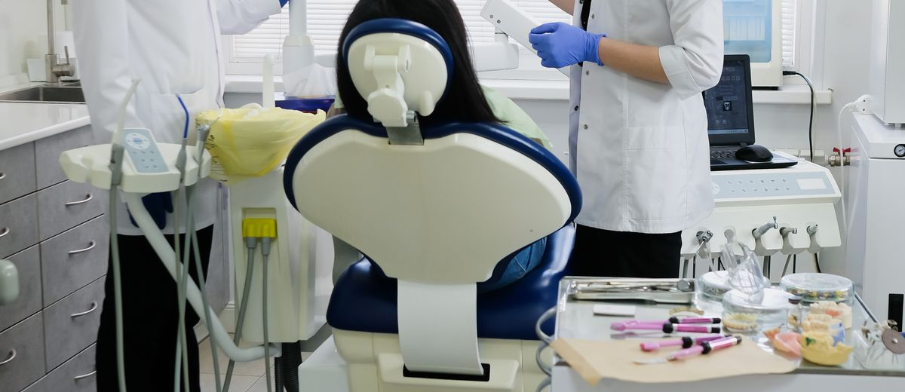
Cómo presentar presupuestos altos sin que el paciente se vaya
El «me lo pienso» rara vez es por dinero. Cómo presentarlo con claridad y empatía para que digan sí.
Leer artículo →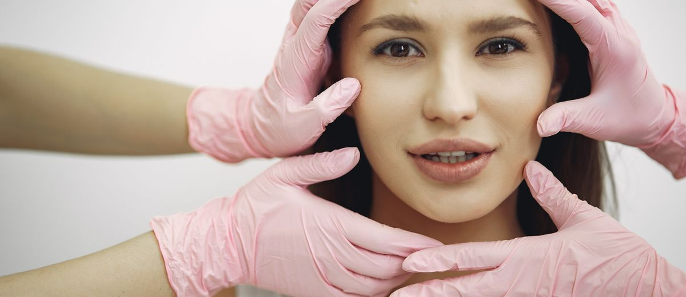
Cómo diferenciar tu clínica de estética (sin bajar precios)
Si el paciente no ve diferencia contigo, elige por precio. Cómo construir una marca que te haga inconfundible.
Leer artículo →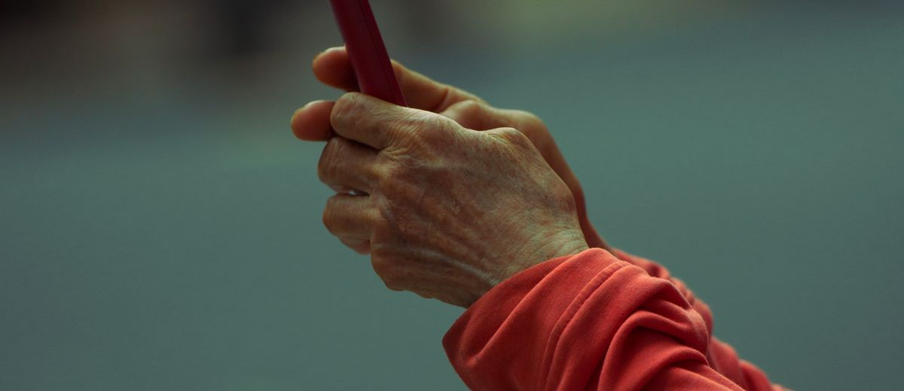
WhatsApp para tu clínica dental: más citas y menos ausencias
Recordatorios, reactivación y seguimiento por el canal que la gente sí lee. Menos huecos vacíos.
Leer artículo →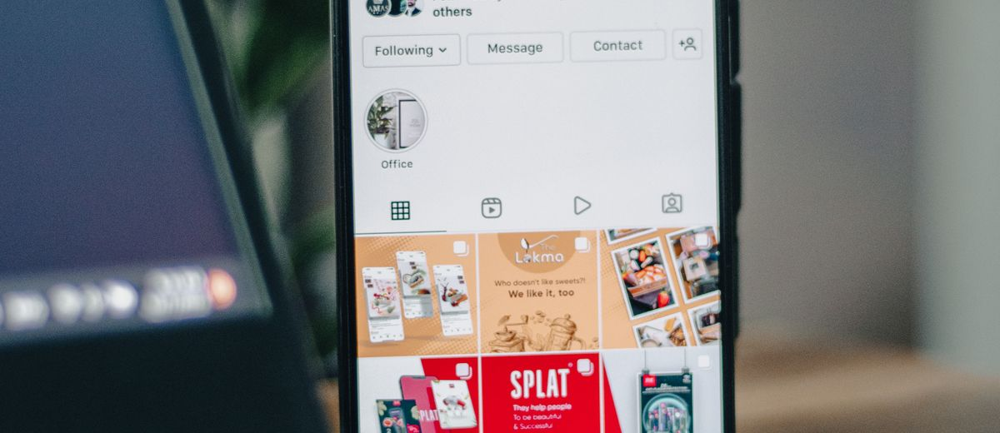
Publicidad en Instagram y Meta para clínicas de estética: por dónde empezar
Objetivo, presupuesto pequeño y una métrica. Cómo empezar en Meta sin tirar el dinero.
Leer artículo →De la llamada a la primera cita: por qué tu recepción vende más que tu web
La mitad de tu marketing se decide en el teléfono. Cómo convertir llamadas en primeras visitas.
Leer artículo →
Cómo fidelizar al paciente de estética para que vuelva cada temporada
Captar cuesta caro; que vuelva, casi nada. Seguimiento y recordatorios para que regrese.
Leer artículo →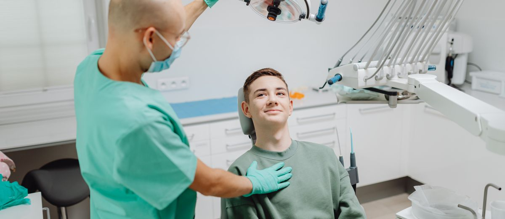
Marketing de implantes dentales: atrae al paciente que valora la calidad
Deja de vender el tornillo y vende la vida que devuelve. Así atraes a quien no elige solo por precio.
Leer artículo →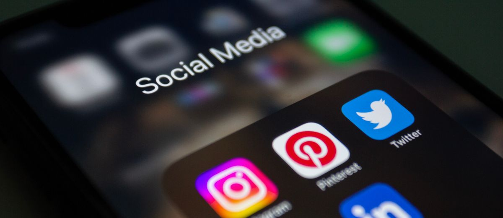
Fotos de antes y después: cómo usarlas en redes sin líos legales
La prueba más potente y la más delicada. Muestra resultados sin saltarte la normativa ni los datos.
Leer artículo →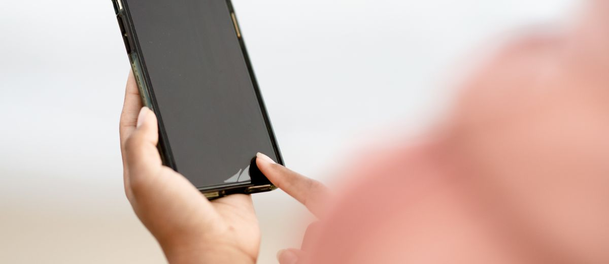
Cómo conseguir reseñas de 5 estrellas en Google (sin perseguir a nadie)
Un método sencillo para que los pacientes contentos te valoren y para responder a las críticas con calma.
Leer artículo →
Cómo llenar la agenda de tu clínica estética sin parecer «low cost»
Bajar precios atrae al paciente equivocado. Cómo llenar la agenda con criterio, confianza y valor.
Leer artículo →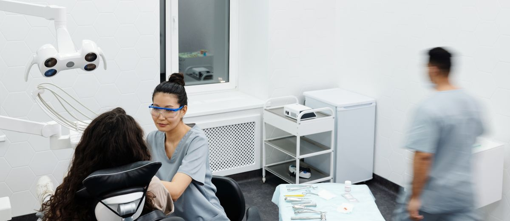
7 formas de captar pacientes para tu clínica dental (sin bajar precios)
Siete palancas de marketing que atraen pacientes de calidad sin entrar en la guerra de precios.
Leer artículo →
Instagram para medicina estética: la guía que sí cumple la normativa
Muestra resultados y genera confianza sin arriesgar tu licencia con el antes/después.
Leer artículo →